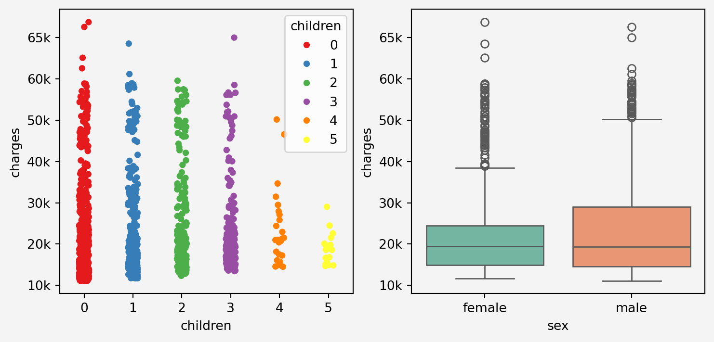
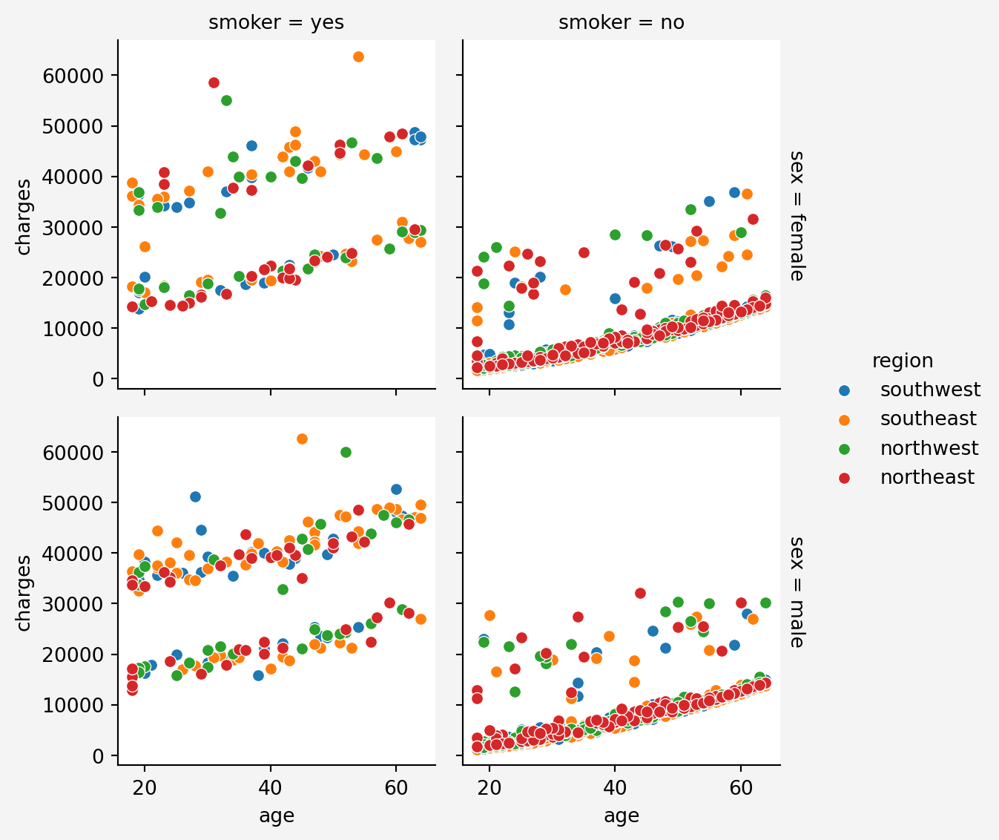

fig, axes = plt.subplots(5,1, figsize=(8,25))sns.scatterplot(x='age', y='charges', data=insurance, hue='sex' ,ax=axes[0])axes[0].set_title('Age vs Charges')sns.scatterplot(x='bmi', y='charges', data=insurance, hue='sex' ,ax=axes[1])axes[1].set_title('BMI vs Charges')sns.boxplot(x='children', y='charges', data=insurance, ax=axes[2])axes[2].set_title('Children vs Charges')sns.boxplot(x='sex', y='charges', data=insurance, ax=axes[3])axes[3].set_title('Gender vs Charges')sns.boxplot(x='smoker', y='charges', data=insurance, ax=axes[4])axes[4].set_title('Smoking vs Charges')for ax in axes: ax.set_facecolor('#f4f4f4')plt.gcf().patch.set_facecolor('#f4f4f4')

Check for Outliers
sns.boxplot(y='charges', data=insurance)plt.title('Boxplot of Charges')plt.gca().set_facecolor('#f4f4f4') plt.gcf().patch.set_facecolor('#f4f4f4')plt.show()

Data Pre-processing for Modeling
Categorical Variables
# Binary Encoding for the variables with two categoriesinsurance['sex'] = insurance['sex'].map({'male':1, 'female':0})insurance['smoker'] = insurance['smoker'].map({'yes':1, 'no':0})# One-Hot Encoding for the multiclas variable: regioninsurance = pd.get_dummies( insurance, columns=['region'], drop_first=True, dtype=int )
Continuous Variable
# Round the continuous charge variable to 2 decimal placesinsurance['charges'] = insurance['charges'].round(2)# Mofe the predicting variable at the end of the dataframeinsurance_charges = insurance.pop('charges')insurance.insert(loc =len(insurance.columns), column='charges', value=insurance_charges)# Quick look of the dataframeinsurance.head()
age
sex
bmi
children
smoker
region_northwest
region_southeast
region_southwest
charges
0
19
0
27.900
0
1
0
0
1
16884.92
1
18
1
33.770
1
0
0
1
0
1725.55
2
28
1
33.000
3
0
0
1
0
4449.46
3
33
1
22.705
0
0
1
0
0
21984.47
4
32
1
28.880
0
0
1
0
0
3866.86
Check for Multicollinearity
from statsmodels.stats.outliers_influence import variance_inflation_factorX = insurance.drop('charges', axis=1)vif_data = pd.DataFrame()vif_data['feature'] = X.columnsvif_data['VIF'] = [variance_inflation_factor(X.values,i) for i inrange(len(X.columns))]print(vif_data)
feature VIF
0 age 7.686965
1 sex 2.003185
2 bmi 11.358443
3 children 1.809930
4 smoker 1.261233
5 region_northwest 1.890281
6 region_southeast 2.265564
7 region_southwest 1.960745
Since BMI and Age have higher values for the multicolinearity, therefore we adopt the following methods
print(np.mean(np.sqrt(mses), axis=1))print('\n')# Minimum and the positionprint('Minimum RMSE={}\n Model {}'.format(min(np.mean(np.sqrt(mses), axis=1)),np.argmin(np.mean(np.sqrt(mses), axis=1))))
model = LinearRegression()model.fit(insurance_train[['age','bmi']],insurance_train.charges.values)print("RMSE on the training set: ", np.round(np.sqrt(mean_squared_error(insurance_train.charges.values, model.predict(insurance_train[['age','bmi']]))),2))print("RMSE on the test set: ", np.round(np.sqrt(mean_squared_error(insurance_test.charges.values, model.predict(insurance_test[['age','bmi']]))),2))
RMSE on the training set: 11444.53
RMSE on the test set: 11392.1